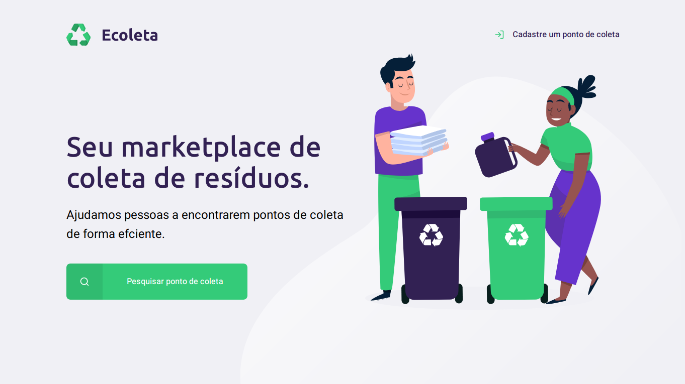

Sobre
Olá, me chamo Fledson e tenho 25 anos, tenho formação em Ciência da Computação e estou atualmente estudando programação web.
Atualmente trabalho como Analista de Suporte de TI na Manná Automação onde trabalho bastante com o banco de dados MySQL, tanto com queries quanto com a manutenção do banco de dados.
Techs
Estou mais focado nos estudos de JavaScript no momento mas segue abaixo outras ferramentas
-
JavaScript -
Html
-
Css
-
MySQL
Projetos
Segue abaixo alguns projetos

Ecoleta
Sistema de cadastro de pontos de coletas de lixo na cidade realizado pela NLW#5
Ecoleta
Sistema de cadastro de pontos de coletas de lixo na cidade realizado pela NLW#5
Ecoleta
Sistema de cadastro de pontos de coletas de lixo na cidade realizado pela NLW#5
Ecoleta
Sistema de cadastro de pontos de coletas de lixo na cidade realizado pela NLW#5
Network
Entre em contato pelos meios abaixo: